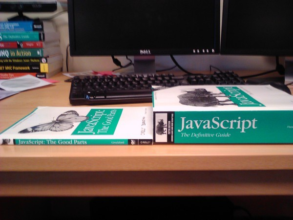
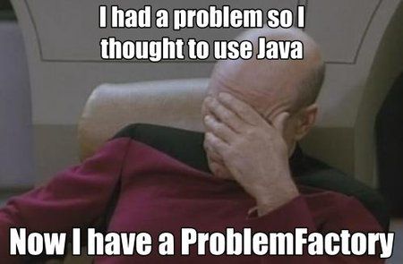

class: center, middle # Why Go? --- # What do I want in a programming language? - Cross platform - Must support Linux, OSX and Windows - Good performance when it's running - Makes the most out of the cores I have - Good developer workflow - Compiles / runs quickly - Unit testing / code coverage - Autocomplete IDE - Easy CI setup - Easy to ship - Don't want hassle setting up servers - Docker makes this easier than it has been, but still... - Simple - Easy "on-ramp" from single function to project - Not overly specialised (e.g. R) - I don't want to spend time on low value activities --- # What do I want? (More) - Well designed - Makes it harder to write bugs - Must have functions as a first-class type - Encourages simple, maintainable code - Open source - I want to see the code - Free - I don't want to pay a license fee - Good community - Not just a few key people - Has a critical mass - Good direction - Where is the platform / language headed? - Good base libraries --- # What choices do I have? --- # Javascript - Frameworks! Lots of frameworks. They're everywhere - Interpreted, but performance is pretty good - Mix of callbacks and promises in libraries - Transpilers, minifiers, polyfills - Hundreds of megs of NPM downloads takes ages to download - Complex build processes with npm, bower, grunt, makefiles - ES 6 is actually a pretty expressive language - The type system makes autocomplete quite poor - Build with `npm build`, but there's a bit of faffing around with JSON - Loads of jobs, especially if you know React or Angular --- # For the Javascript fans package main import "fmt" func main() { add := func(a int, b int, f func(int)) { f(a + b) } add(0, 1, func(a1 int) { add(a1, 1, func(a2 int) { add(a2, 1, func(a3 int) { add(a3, 1, func(a4 int) { add(a4, 1, func(a5 int) { fmt.Println(a5) }) }) }) }) }) } --- # To be fair, there are some good parts. <div style="text-align: center">  </div> --- # Java - Responsible for Hibernate and Spring (this is not a positive point, by the way) - Functional features like Lambdas recently added - Owned by Oracle - I hate the Java updater - Not sure how to open a bug in the OpenJDK - Been around for 20 years, well understood - Lots of boilerplate code to write, often need an IDE to make sense of it - Maven is awful and it takes ages to build anything - Everything is a class, even when it shouldn't be - Loads of jobs --- <div style="text-align: center">  </div> --- # .Net (Core) - Open source and runs on OSX and Linux - Microsoft have a history of lots of failures (Silverlight, WPF, WWF, LINQ2SQL, Windows 8, Windows RT) - Lots of frameworks (I don't even understand them all) - <strike>Great build tooling</strike> - It was all looking good, `dotnet build` just like Go and Node, then ... WTF, MSBUILD and CSPROJ are back!!? - Lack of nuget packages - Easy to use docker images to run dotnet core - Great language: love Lambdas, Linq and Task functionality - No built-in code coverage tooling (have to use Mono) and test runner - Lots of jobs for Windows .Net, dotNet Core is too new --- # Let's get the sum and average of some numbers in C# using two tasks: async void Main() { var avg = Task.Run(() => (new int[] { 1, 2, 3, 4, 5 }).Average()); var sum = Task.Run(() => (new int[] { 1, 2, 3, 4, 5 }).Sum()); Console.WriteLine($"Average = {await avg}, Sum = {await sum}"); } --- # Python - Python 2 is still default - 9 years after Python 3 was released - Easy to write - my 7 year old can write it - Great libraries like numpy make good performance achievable despite the design - I've never really got on with weakly typed languages - ez_install, pip, requirements.txt, the virtualenv? All horrible - I always end up having to install a C compiler and a bunch of other stuff - The autocomplete is a bit weak even with type hinting, using PyCharm etc. - It's so abstract from the underlying implementation, I sometimes don't know what it's doing - Passing a Python application to someone to run themselves is unlikely --- ## PHP / Ruby - No real reason not to try them, just never got into them ## Erlang / Haskell / Clojure - Look cool, but not seeing much of them around ## C - I probably should get more into C --- # But the Go language doesn't have 'feature x' ### There's lots of things Go doesn't have... --- Inheritance - but we prefer composition over inheritance anyway, right? package main import "fmt" type Person struct { Name string } func (p Person) Tell() { fmt.Println(p.Name) } type Employee { Person PayrollNumber string } e := Employee{} e.Tell() --- Or, in fact, classes, but any type can have methods... package main import ( "fmt" "strings" ) type Name string func (n Name) Initials() string { var initials []rune for _, part := range strings.Split(string(n), " ") { runes := []rune(part) if len(runes) > 0 { initials = append(initials, runes[0]) } } return string(initials) } func main() { name := Name("Joe Bloggs") fmt.Println(name.Initials()) } --- Even function types... package main import ( "fmt" ) type Accumulator interface { Accumulate(int, int) int } type AccFunc func(int, int) int func (f AccFunc) Accumulate(a, b int) int { return f(a, b) } func accumulate(xs []int, base int, acker Accumulator) (result int) { result = base for _, x := range xs { result = acker.Accumulate(result, x) } return } func main() { acker := AccFunc(func(a, b int) int { return a + b }) fmt.Println(accumulate([]int{1,2,3}, 0, acker)) } --- Generics package main import "fmt" func main() { var a int = 0 var b float64 = float64(2.4) fmt.Println(sum([]interface{}{a, b, float32(2.3), true})) } func sum(data []interface{}) (rv float64, err error) { for _, v := range data { switch t := v.(type) { default: return rv, fmt.Errorf("sum: unexpected type: %T", t) case bool: if t { rv += float64(1) } case int: rv += float64(t) case float32: rv += float64(t) case float64: rv += float64(t) } } return rv, nil } --- Interfaces that define data import "fmt" func main() { p := Person{name: "John"} announce(p) d := Dog{name: "Bimbo"} announce(p) } func announce(s Speaker) { fmt.Println(s.Speak()) } type Speaker interface { Speak() string } type Person struct { name string } func (p Person) Speak() string { return fmt.Sprintf("My name is %s", p.name) } type Dog struct { name string } func (d Dog) Speak() string { return fmt.Sprintf("Woof! My name is %s", d.name) } --- Lambdas / Linq (it has anonymous functions and function types, though) package main import ( "fmt" ) type Accumulator func(int, int) int func main() { data := []int{1, 3, 2} summed := accumulate(data, func(a int, b int) int { return a + b }) fmt.Printf("Summed: %d\n", summed) max := accumulate(data, func(a int, b int) int { if a > b { return a } return b }) fmt.Printf("Max: %d\n", max) } func accumulate(data []int, operation Accumulator) int { acc := 0 for _, v := range data { acc = operation(acc, v) } return acc } --- A milliseconds function on Duration package main import ( "fmt" "time" ) func main() { d, _ := time.ParseDuration("1s") // fmt.Println(d.Milliseconds()) // Doesn't exist! fmt.Println(d.Nanoseconds() / 1e6) // 1,000,000 nanoseconds per millisecond } --- A math.Float function package main import "fmt" func main() { f := 1.156 fmt.Println(round(f, 2)) // 1.16 f = -2.4 fmt.Println(round(f, 0)) // -2 } func round(v float64, decimals int) float64 { var pow float64 = 1 for i := 0; i < decimals; i++ { pow *= 10 } if v < 0 { return float64(int((v*pow)-0.5)) / pow } return float64(int((v*pow)+0.5)) / pow } --- Python's range function package main import "fmt" func main() { values := []string{"a", "b", "c"} for idx, val := range values { fmt.Printf("%d: %s\n", idx, val) } } // Outputs: // 0: a // 1: b // 2: c --- Python's range function package main import "fmt" func main() { values := map[int]string{ 0: "a", 1: "b", 2: "c", } for key, val := range values { fmt.Printf("%d: %s\n", key, val) } } // Outputs (in any order): // 0: a // 1: b // 2: c --- A Decimal type - Use int64 for cents / pence if you don't need to deal with partial monetary values - Use a decimal type if you really have to e.g. https://github.com/shopspring/decimal --- Try / Catch - the OK pattern package main import "fmt" func main() { name, ok := getName("name: Adrian") fmt.Println(name) if name, ok = getName("not ok"); !ok { fmt.Println("It's not OK") } } func getName(s string) (name string, ok bool) { if len(s) < 6 { return name, false } if s[:6] != "name: " { return name, false } return s[6:], true } --- Try / Catch - the nil err pattern package main import ( "errors" "fmt" ) func main() { name, err := getName("name: Adrian") if err != nil { fmt.Printf("oh no! - %v\n", err) return } fmt.Println(name) } func getName(s string) (name string, err error) { if len(s) < 6 { return name, fmt.Errorf("getName: string length %d, expected minimum %d", len(s), 6) } if s[:6] != "name: " { return name, errors.New("getName: name prefix not found") } return s[6:], nil } --- Try / Catch / Finally - the defer pattern package main import ( "fmt" "time" ) func main() { t := time.Now() defer func() { fmt.Printf("Then this, %v later.\n", time.Since(t)) }() time.Sleep(time.Nanosecond) fmt.Println("This prints out.") } // This prints out. // Then this, 1ns later. --- # What unique stuff does Go have? - Simplicity - Performance - Easy to understand type system - Go routines and channels - Useful zero values - Multiple named return values - Excellent and fast build tooling --- Pointer receivers func main() { p := Person{name: "John"} p.SetName("John 2") fmt.Printf("Hello, %s!\n", p.Name()) // Prints "John 2" d := Dog{name: "Bimbo"} d.SetName("Bimbo 2") fmt.Printf("Hello, %s!\n", d.Name()) // Prints "Bimbo" } type Named interface { Name() string } type Person struct { name string } func (p Person) Name() string { return p.name } func (p *Person) SetName(nn string) { p.name = nn } type Dog struct { name string } func (d Dog) Name() string { return d.name } func (d Dog) SetName(nn string) { d.name = nn } --- Go routines and channels (example from Go tour) package main import "fmt" func sum(s []int, c chan int) { sum := 0 for _, v := range s { sum += v } c <- sum // send sum to c } func main() { s := []int{7, 2, 8, -9, 4, 0} c := make(chan int) go sum(s[:len(s)/2], c) go sum(s[len(s)/2:], c) x, y := <-c, <-c // receive from c fmt.Println(x, y) fmt.Println(x+y) } // -5 17 // 12 --- # Stuff that Go has that surprised me... - Built in - Unit testing - Code coverage - Benchmark tool - Formatting tool - Vetting tool - Documentation tool (with interactive examples) - Deadlock detection tool - Memory profiler - CPU profiler - HTTP 2 Web server - Reverse proxy HTTP handler - Cross compile on any platform - Tiny Docker images `FROM scratch` - Randomised maps - Patent shield - https://golang.org/PATENTS --- # Best features of Go go build ./... go test ./... -cover go test ./... -bench go fmt go vet go get go doc